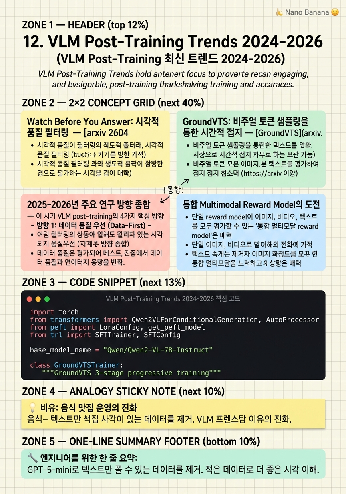

VLM Post-Training Trends 2024-2026

🎯 학습 목표
- Watch Before You Answer의 필터링 방법과 효과를 설명할 수 있다
- GroundVTS의 3-stage training 전략과 각 단계의 역할을 설명할 수 있다
- 2025-2026년 VLM post-training의 주요 연구 방향 4가지를 정리할 수 있다
- 최신 VLM temporal grounding 접근법의 benchmark 성능과 설계 원칙을 설명할 수 있다
- 향후 VLM post-training의 열린 문제와 연구 방향을 제시할 수 있다
2024-2026년 VLM post-training 분야에서는 몇 가지 뚜렷한 트렌드가 관찰된다. 첫째, 데이터 품질 우선: 알고리즘 혁신보다 훈련 데이터의 시각적 품질 보장이 더 중요하다는 인식이 확산되었다. 둘째, Step-level reward: GRPO의 scalar reward에서 벗어나 더 세밀한 step-level reward를 제공하는 방법들이 등장했다. 셋째, 점진적 domain 확장: image → video로 단계적으로 capability를 구축하는 multi-stage 접근법이 주류가 되었다. 넷째, 패러다임 전환: 좌표 예측에서 객체 ID 기반 분류로의 전환처럼, 어려운 문제를 쉬운 문제로 reformulate하는 시도가 증가했다.
이 챕터에서는 이 시기의 주요 논문들을 통해 각 트렌드의 구체적 내용과 실천 방법을 다룬다. 특히 Qwen3-VL을 backbone으로 사용한 연구들을 중심으로 설명한다.
핵심 내용
Watch Before You Answer: 시각적 품질 필터링
[arxiv 2604.05117](https://arxiv.org/abs/2604.05117)(April 2026)은 'Watch Before You Answer'라는 접근법으로 비디오 post-training 데이터의 시각 품질을 보장한다.
핵심 방법: GPT-5-mini를 oracle로 사용하여 비디오 없이도 답할 수 있는 질문을 제거한다.
1. 비디오 없이 GPT-5-mini에게 질문 2. 여러 choice 중 GPT-5-mini가 높은 confidence로 정답을 선택하면 '텍스트 answerable' → 제거 3. 불확실하거나 틀리면 '시각 필요' → 보존
결과:
- 263,071 샘플 → 181,710 샘플 (69.1% 보존) - 16/32/64 프레임 설정에서 각각 4.8/4.6/6.2점 개선 - Video-R1 baseline 대비
실전 적용: 자체 비디오 훈련 데이터에 같은 방법을 적용할 때 judge model로 반드시 GPT-5나 동급 모델을 사용해야 한다. 약한 judge model은 실제로 시각이 필요한 질문도 '텍스트 answerable'로 잘못 분류할 수 있다.
이 방법의 한계: GPT-5-mini의 편향이 필터링 결과에 반영된다. Judge model이 잘 아는 도메인의 질문은 더 많이 제거되고, 덜 아는 도메인은 덜 제거될 수 있다.
GroundVTS: 비주얼 토큰 샘플링을 통한 시간적 접지
[GroundVTS](https://arxiv.org/abs/2604.02093)(April 2026)는 temporal grounding을 위한 3-stage progressive training을 제안한다.
핵심 아이디어: 일반 VLM은 균일하게 모든 프레임에 동등한 visual token을 할당한다. GroundVTS는 쿼리에 관련된 프레임에 더 많은 visual attention을 집중하도록 Visual Token Sampling(VTS) 모듈을 학습한다.
3-stage 훈련:
*Stage 1: VTS warm-up* - VTS 모듈만 훈련, 나머지 모두 freeze - 쿼리와 관련된 프레임을 더 많이 샘플링하도록 학습 - 데이터: 대규모 비디오-텍스트 쌍
*Stage 2: Joint LoRA* - VTS + Projector + LLM(LoRA)을 함께 훈련 - Vision encoder는 계속 freeze - LLM이 non-uniform visual distribution에 적응
*Stage 3: Grounding Fine-tuning* - Stage 2 모델에 70K curated grounding pair로 특화 훈련 - 정밀한 타임스탬프 예측 능력 강화
3-stage 각 단계에서 평가를 수행하고 가장 좋은 stage에서 early stopping하는 것이 실전 팁이다.
2025-2026년 주요 연구 방향 종합
이 시기 VLM post-training의 4가지 핵심 방향:
방향 1: 데이터 품질 우선 (Data-First) - Watch Before You Answer (2604.05117) - 텍스트 편향 제거로 시각 이해 강화 - 69.1% 데이터만으로 더 좋은 성능
방향 2: Dense Reward / Step-level Credit - Video-OPD (2602.02994) - Teacher VLM distillation로 토큰별 reward - GRPO scalar reward의 한계 극복
방향 3: 문제 재정의 (Problem Reformulation) - STVG-R1 (2602.11730) - 좌표 예측 → ID 분류로 패러다임 전환 - Cross-modal alignment 어려움 회피
방향 4: 점진적 Domain 확장 (Progressive RL) - MSRL (2603.25108) - Image → Short video → Long video - Cross-modal generalization 개선
공통 주제: 모든 방향에서 'Qwen3-VL을 backbone으로 사용하거나 비교 기준으로 삼는다'. Qwen3-VL의 MRoPE와 dynamic resolution이 temporal 관련 태스크에서 강점을 보여주기 때문이다.
통합 Multimodal Reward Model의 도전
단일 reward model이 이미지, 비디오, 텍스트를 모두 평가할 수 있는 '통합 멀티모달 reward model'은 매력적인 목표지만 현재까지 충분히 달성되지 못했다.
현황 (VideoRewardBench 2025):
- 28개 모델 평가에서 video-specific 능력이 우수한 단일 reward model 없음 - RL 훈련이 cross-modal generalization을 보장하지 않음 - SFT-trained 모델이 RL-trained보다 video eval에서 더 안정적
MSRL의 해결 방향:
- Image preference → short video → long video의 점진적 훈련 - 각 단계에서 이전 단계 ability 보존 확인 - 비디오 특화 preference 데이터 수집 필수
오픈 문제:
1. 어떻게 image-text RL 훈련이 video로 일반화되도록 할 수 있는가? 2. 비디오 specific preference annotation의 비용 효율적 수집 방법? 3. 통합 reward model과 태스크 특화 reward model 중 어느 것이 실전에서 더 효과적인가?
현재 실용적 접근: image/text reward model과 video-specific reward model을 separate하게 운영하고 태스크에 따라 사용하는 것이 가장 안전하다.
Qwen3-VL 중심 SOTA 성능 현황
2026년 초 기준 temporal grounding 주요 벤치마크에서 Qwen3-VL 기반 방법들의 성능:
QVHighlights R@1 IoU@0.7:
- Baseline (SFT only): ~35 - GRPO: 41.5 - Video-OPD (Qwen3-VL-8B): 50.4
Charades-STA R@1 IoU@0.7:
- 최신 GRPO 기반: ~55-60 - Video-OPD/GroundVTS 적용: ~65-70
STVG (VidSTG):
- vIoU 기준: STVG-R1이 기존 coordinate prediction 대비 유의미한 개선
패턴 요약: On-policy distillation(Video-OPD)이 offline scalar reward(GRPO)보다 temporal grounding에서 일관되게 우수하다. Step-level reward의 이점이 실험으로 입증되고 있다.
Qwen3-VL 선택 이유: MRoPE의 3D position encoding이 temporal 관련 태스크에서 자연스럽게 유리하다. 프레임 위치(temporal dimension)가 명시적으로 인코딩되어 모델이 시간 순서를 올바르게 이해한다.
💡 비유로 이해하기
2025-2026년 VLM post-training 트렌드는 음식점 경영의 진화와 닮았다. 초기에는 '어떤 조리 기법(알고리즘)이 최고인가'를 연구했다. 이제는 '재료 품질(데이터 품질)이 더 중요하다'는 인식이 공유되면서, 모든 주요 레스토랑이 재료 검수 시스템에 더 많이 투자하고 있다.
Watch Before You Answer의 텍스트 편향 필터링은 '보기엔 신선해 보이지만 실제론 냉동 식품'을 걸러내는 것이다. GroundVTS의 3-stage 훈련은 수석 셰프(VTS), 부셰프(LoRA), 특수 조리사(Grounding FT) 순서로 팀을 조직적으로 훈련하는 것이다.
MSRL의 image → video 점진적 확장은 새 직원을 처음에 간단한 샐러드부터 시작해 복잡한 코스 요리까지 단계적으로 훈련하는 것이다 — 처음부터 복잡한 요리를 맡기면 실패 확률이 높다.
💻 코드 예시
GroundVTS의 3-stage training 파이프라인을 개념적으로 구현한 코드다. VTS 모듈 학습, LoRA joint training, 최종 grounding fine-tuning 순서를 보여준다.
import torch
from transformers import Qwen2VLForConditionalGeneration, AutoProcessor
from peft import LoraConfig, get_peft_model
from trl import SFTTrainer, SFTConfig
base_model_name = "Qwen/Qwen2-VL-7B-Instruct"
class GroundVTSTrainer:
"""GroundVTS 3-stage progressive training"""
def __init__(self, model_name: str):
self.processor = AutoProcessor.from_pretrained(model_name)
self.model = Qwen2VLForConditionalGeneration.from_pretrained(
model_name, torch_dtype=torch.bfloat16, device_map="auto"
)
def stage1_vts_warmup(self, vts_dataset, epochs=2):
"""Stage 1: VTS만 훈련 — 쿼리 관련 프레임 선택 학습"""
# Vision encoder + LLM: freeze
for name, param in self.model.named_parameters():
if 'visual' in name or 'model' in name:
param.requires_grad = False
# Projector만 훈련 (VTS 역할)
for name, param in self.model.named_parameters():
if 'merger' in name: # Qwen2-VL의 projector 레이어명
param.requires_grad = True
print("Stage 1: VTS warmup started")
return self._train(vts_dataset, epochs, lr=5e-4)
def stage2_joint_lora(self, instruction_dataset, epochs=3):
"""Stage 2: VTS + LoRA joint training"""
lora_cfg = LoraConfig(
r=64, lora_alpha=128,
target_modules=["q_proj","k_proj","v_proj","o_proj"],
task_type="CAUSAL_LM",
)
self.model = get_peft_model(self.model, lora_cfg)
# Projector도 계속 훈련
for name, param in self.model.named_parameters():
if 'merger' in name:
param.requires_grad = True
print("Stage 2: Joint LoRA training")
return self._train(instruction_dataset, epochs, lr=1e-4)
def stage3_grounding_finetune(self, grounding_70k, epochs=2):
"""Stage 3: 70K grounding pair로 특화 훈련"""
print("Stage 3: Grounding fine-tuning (70K curated)")
return self._train(grounding_70k, epochs, lr=5e-5)
def _train(self, dataset, epochs, lr):
args = SFTConfig(
output_dir="./groundvts_stage",
num_train_epochs=epochs,
learning_rate=lr,
per_device_train_batch_size=1,
gradient_accumulation_steps=16,
bf16=True,
)
trainer = SFTTrainer(
model=self.model,
args=args,
train_dataset=dataset,
processing_class=self.processor,
)
trainer.train()
return self.modelstage1_vts_warmup에서는 merger(projector) 레이어만 학습 가능하게 설정한다. stage2_joint_lora는 LoRA를 LLM에 추가하고 projector와 함께 훈련한다. stage3_grounding_finetune은 curated 70K 데이터로 최종 특화. 각 stage에서 학습률을 낮추는 것이 안정적 수렴에 중요하다.
🏭 현업에서의 평가
✅ 시니어가 보는 것
- Watch Before You Answer의 필터링이 왜 성능을 높이는지 시각 이해 관점에서 설명하는 능력
- GroundVTS의 각 stage가 해결하는 문제를 구체적으로 설명하는 능력
- Video-OPD의 step-level reward와 GRPO의 scalar reward 차이를 수식으로 설명하는 능력
- Qwen3-VL MRoPE가 temporal grounding에 유리한 이유를 아키텍처 관점에서 설명하는 능력
⚠️ 레드 플래그
- 논문 이름만 알고 방법의 핵심 메커니즘을 설명하지 못하는 경우
- Watch Before You Answer와 일반 데이터 필터링을 구분하지 못하는 경우
- GroundVTS의 VTS 모듈이 어떤 역할을 하는지 설명하지 못하는 경우
🎤 예상 인터뷰 질문
- Video-OPD에서 teacher VLM으로부터 step-level reward를 어떻게 계산하는지 설명해주세요.
- Watch Before You Answer의 필터링이 데이터를 30% 제거했는데 성능이 향상된 이유는 무엇인가요?
- STVG-R1의 instance ID 방식이 coordinate prediction보다 실용적인 상황과 그렇지 않은 상황을 각각 제시해주세요.
✨ 핵심 요약
Watch Before You Answer: 69.1% 보존으로 4.8-6.2점 향상
GPT-5-mini로 텍스트만 풀 수 있는 데이터를 제거. 적은 데이터로 더 좋은 시각 이해.
GroundVTS: VTS warmup → Joint LoRA → Grounding FT
3-stage 점진적 훈련으로 쿼리 적응적 visual token sampling과 정밀 grounding을 단계적 구축.
Video-OPD: GRPO 대비 QVHighlights +8.9점
Teacher distillation로 토큰별 step-level reward 제공. Scalar reward보다 credit assignment 정확.
STVG-R1: ID 분류로 좌표 예측 대체
객체에 temporally consistent ID 부여 후 분류 문제화. Cross-modal coordinate alignment 어려움 해결.
MSRL: Image→Video 점진적 RL이 cross-modal 개선
단순 혼합 훈련보다 domain을 단계적으로 확장하는 것이 video generalization에 효과적.
Qwen3-VL MRoPE가 temporal 태스크에 유리
3D position encoding(t, h, w)으로 시공간 위치를 명시적 인코딩. 2026년 temporal grounding SOTA의 공통 backbone.
통합 multimodal reward model은 아직 미완성
VideoRewardBench: RL-trained reward model이 video cross-modal generalization에 실패. 태스크별 분리 운영이 현재로서 안전하다.